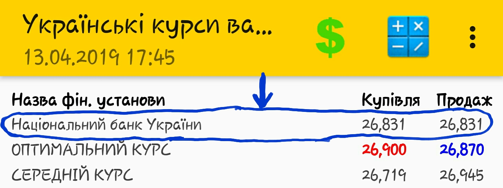

Українські курси валют. Довідка
Загальна інформація.
Додаток призначений для відображення актуальних готівкових курсів валют в банка та пунктах обміну валюти в Україні.
Додаток використовує два основних джерела курсів валют - офіційний портал НБУ та Finance.ua
Додаток відображає курси обміну наступних валют:
- Долар США;
- Євро;
- Англійській фунт стерлінгів;
- Польський злотий;
- Російській рубль
При кожному запуску програма оновлює курси валют з відповідних джерел. У вихідні та святкові дні дані курсів можуть не відображатися, з причини відсутності даних у джерелах на поточний час доби.
Як користуватися додатком.
1. Темна тема вмикається у вікні "Про Додаток", яке відкривається шляхом натискання відповідного пункту меню у головному вікні додатку або вікні валютного калькулятора.
2. Оптимальний курс купівлі валюти відображається червоним кольором, курс продажу валюти - синім у світлій темі та жовтим у темній темі.
3. Для відображення детальної інформації про фінансову установу - натисніть на її назву або на її курс купівлі/продажу валюти як показано на малюнку нижче. Детальну інформацію можна відобразити як з основного вікна додатку так і з вікна валютного калькулятора.
